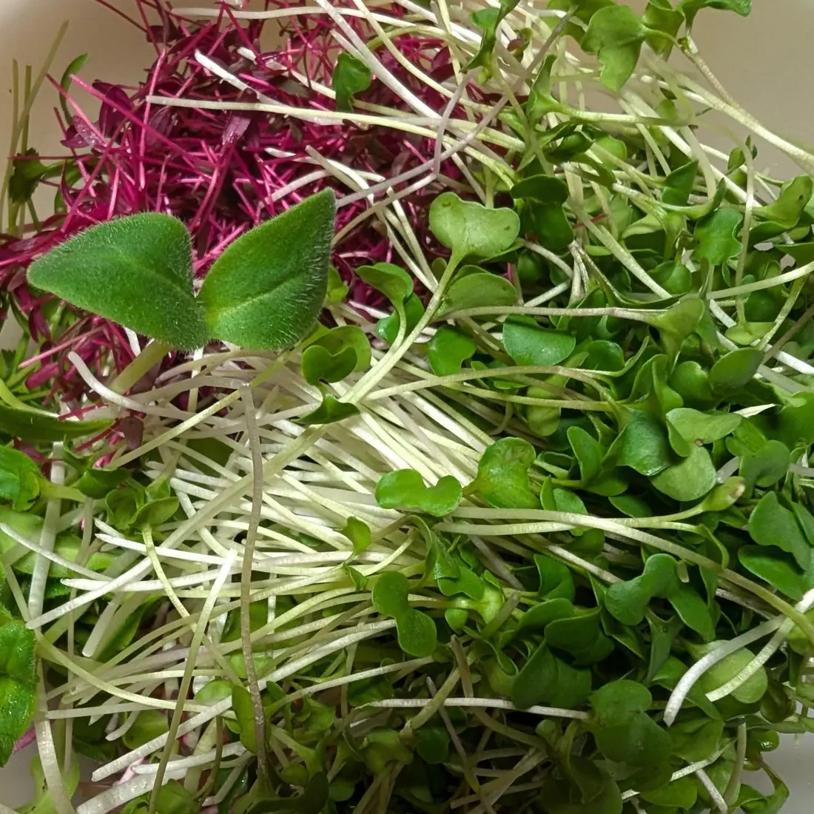
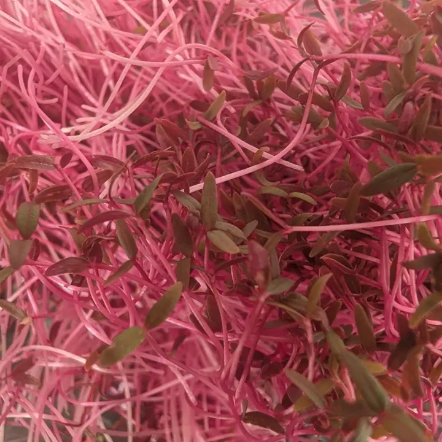
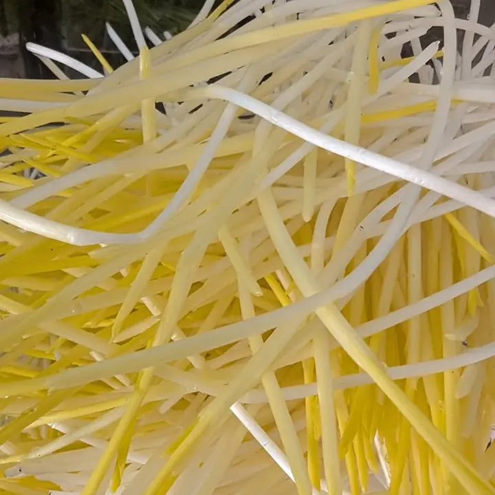
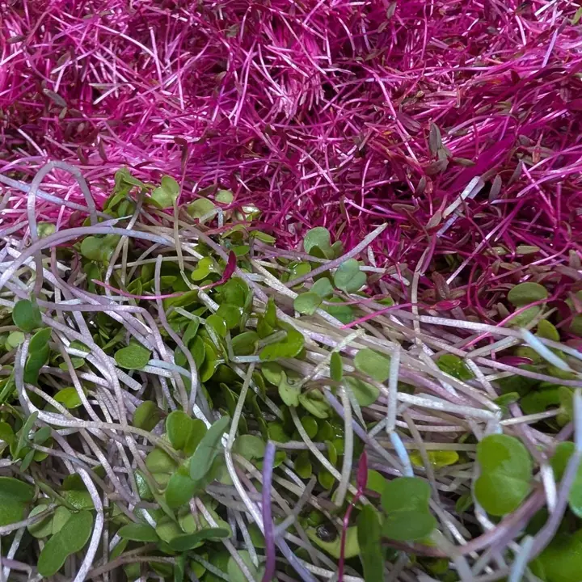
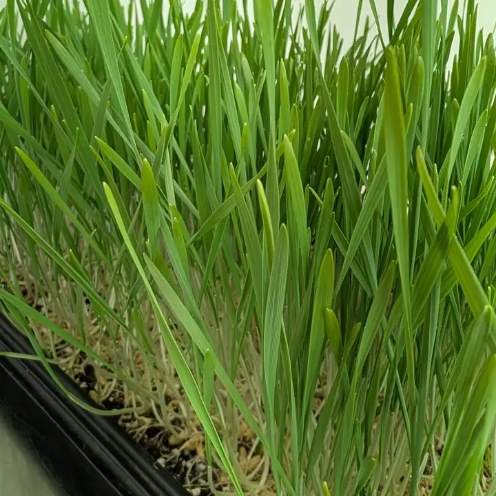
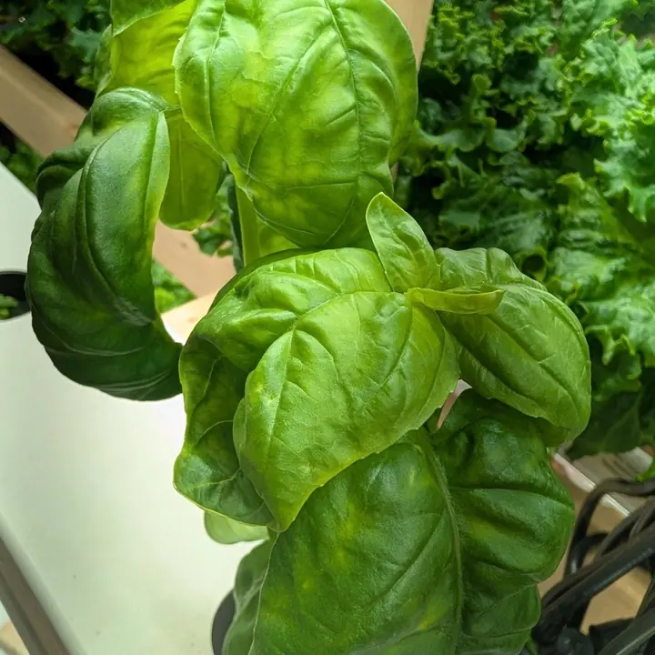
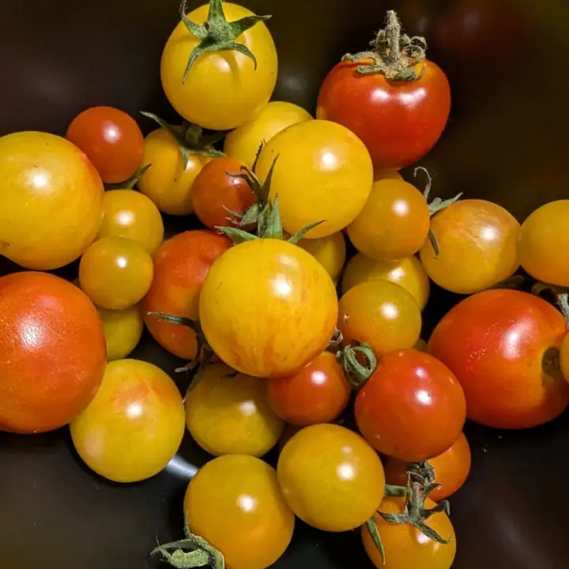
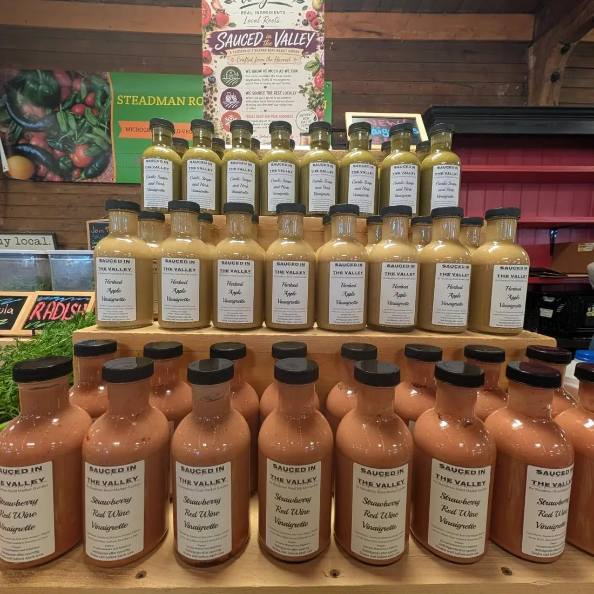
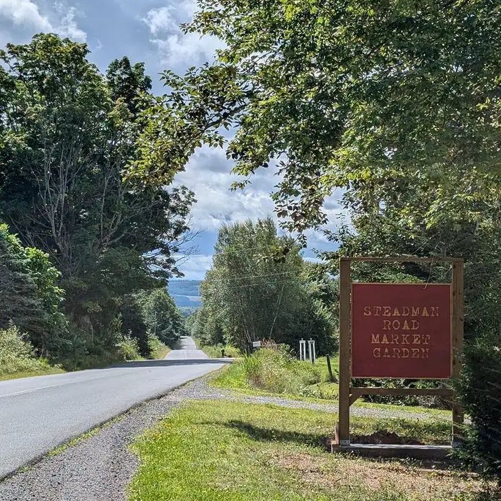

Every Saturday, all year
Wolfville Farmers' Market
8:30 am to 1 pm
24 Elm Avenue, Wolfville
We help you add a sparkle of fresh flavour to everything you make, with vegetables from the field in season.
No chemical pesticides, herbicides or fertilizers.

Every Saturday, all year
8:30 am to 1 pm
24 Elm Avenue, Wolfville
Monday to Friday
9 am to 6 pm
297 Steadman Road, Keddys Corner
Order online
Order through the Wolfville Farmers' Market online store and pick up on Wednesday.
Please bring your jars or containers and we'll fill them up. We have reusable jars for sale too.
Microgreens and hydroponics in our indoor grow room. Everything else outside in soil.
Throw them on almost everything. Dehydrate them for smoothies, or freeze them like you do herbs. Customers especially love the broccoli.





Harvested year-round. Fresh winter basil is back.

A variety of market vegetables from the field, and Music garlic.

Life is better sauced.
Our own vinaigrettes, crafted from the harvest and made with freeze-dried fresh ingredients. Find them on our market table and at the farm stand, on their own or in a gift pack with freeze-dried microgreens.

Petrina Flynn went from being a mail carrier in Cambridge, Ontario, to a microgreen farmer outside of Kentville. She and partner Craig Robertson had planned to retire to Atlantic Canada someday. Then they decided to just go, and made the move in August 2022.
The market garden launched in 2023. Petrina sources seed from Canadian companies, including several in Atlantic Canada.
I wasn't planning on doing microgreens or hydroponics. We were only going to do field vegetables but we learned that the greens were very popular and could be grown year-round.
Petrina Flynn, in Saltscapes magazine, July 2026
"Excellent fresh clean greens!" Michelle, Facebook review, June 2026